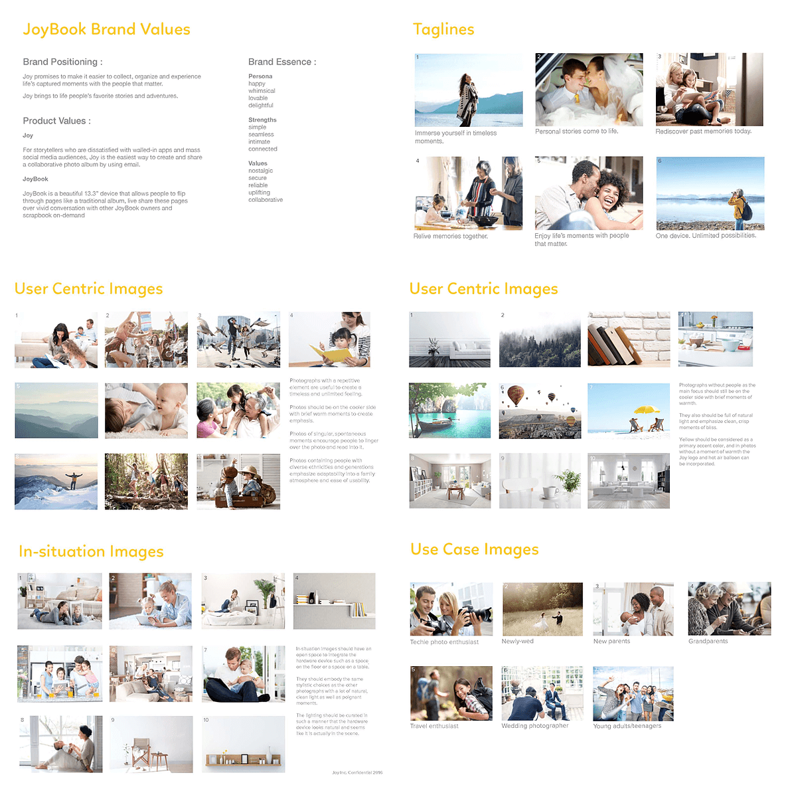
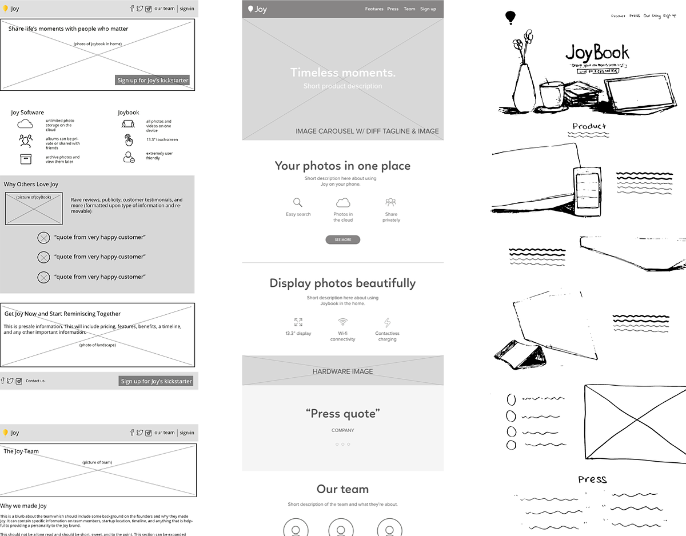
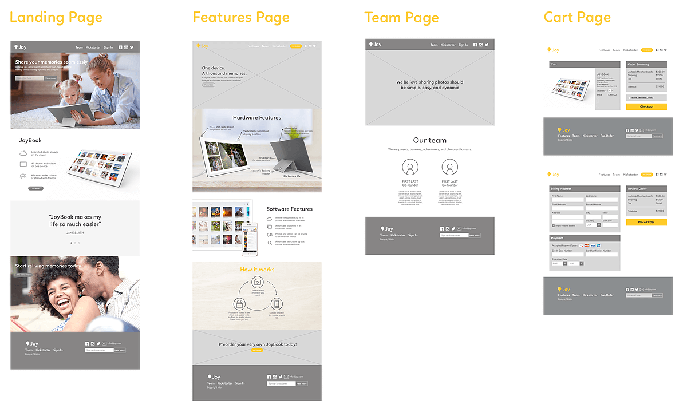
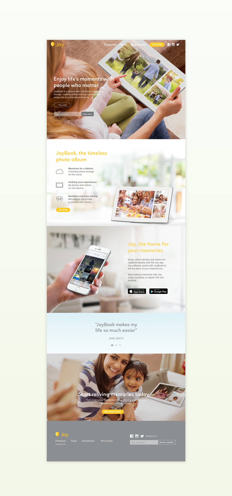
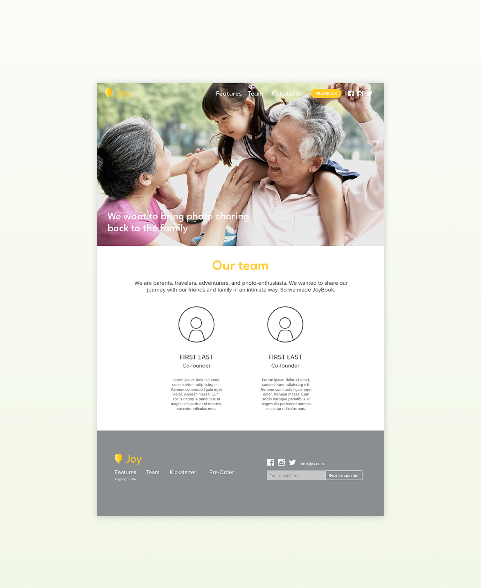
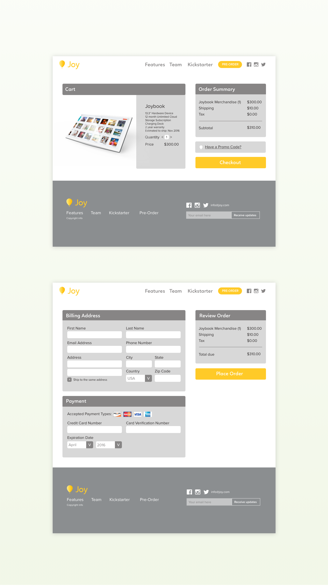
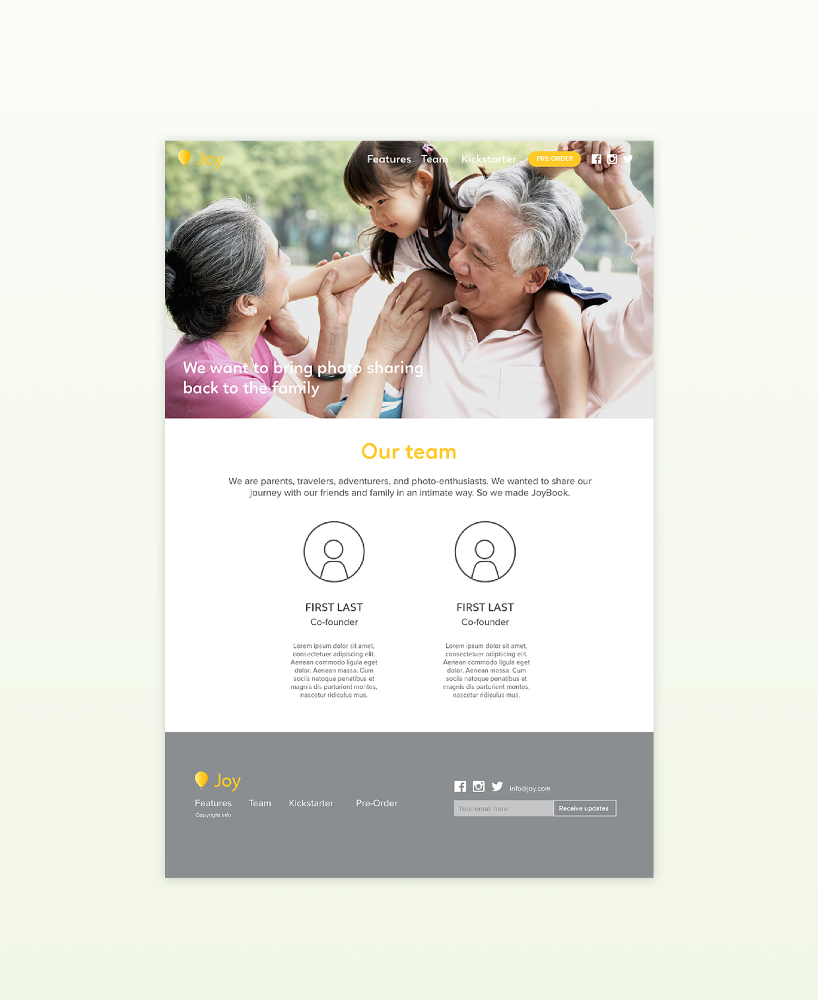
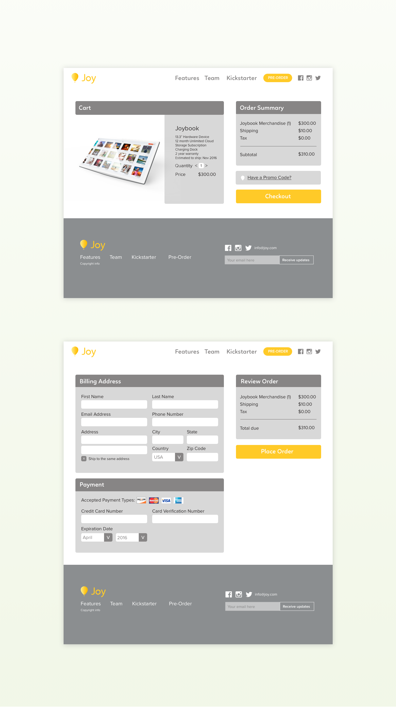

Joybook is a digital photo display that seeks to make photo sharing dynamic and simple for your friends and family. Envisioned by parents who wanted an alternative method of sharing photos, Joybook bridges the online Facebook album and the traditional, bound photo album.
Our goal was to generate a clear, cohesive brand voice and photo imagery surrounding Joybook that spoke to its target audiences. We also needed to produce a marketing website to launch their kickstarter that clearly communicated why consumers should be interested in Joybook.
Joybook already had some existing brand assets, so we first delved into those to see what Joybook as a company valued and what their vision was. We also conducted a qualitative survey to better understand the problem space of photo-sharing. Our findings are as follows:
- While a majority of people share photos online, many have issues with limited digital storage space
- Sharing on a more personal level (particularly to family) is difficult through large social networks like Facebook due to privacy controls and cases where not all of the family are not on the network
- Photos exist on a myriad of different devices, making them difficult to organize-- phones, laptops, cameras, friend's devices, social networks, etc
We therefore looked to create a brand for Joybook that emphasized Joybook as a solution for these problems and conveyed the company's values. After we brainstormed some initial language and imagery pairings, Edison's Co conducted surveys to determine what feelings the branding language and imagery evoked in potential users. These surveys helped us refine the taglines we ultimately used. Language around community and reminiscing strongly resonated with people's experiences surrounding personal photography.
Some of our initial language and imagery brainstorming
Once we had a clear idea of JoyBook's branding, we moved on to create low-fidelity wireframes incorporating the core areas of content for the site. From these, we identified core areas of improvement and moved onto higher fidelity wireframes.
Our first low-fidelity mockups. Mine is in the middle.
Short and Sweet Pages
We don’t want the user scrolling forever and losing interest before they reached key areas of content.
Separate Team Page from the Landing Page
The team information wasn’t essential to the main landing page’s purpose of introducing the product, though it was still important for conveying the brand story.
Call to Action Buttons
Call-to-actions on the hero image and at the bottom of the page to direct users to purchase the product.
Features Page
To better target the young techie demographic, we should include a specs page of Joybook’s features.
Photos and Taglines
By interspersing photography with the text, we keep the user interested throughout. This also provides an opportunity to tell Joybook's brand story.

Mid-fidelity of various pages of the website.
Hero Image
We particularly paid attention to the hero image, as this would be the first impression people have of the product when they visit the site. We rendered several images including the Joybook product and talked to people to get feedback.
People associated the product with fitness due to the woman's yoga gear.
The product wasn't noticeable enough to people. People also were unsure what the function of the product was.
While the setting and tone of photograph portrayed the correct feelings of warmth, caring, comfort, and intimacy, the function of the product was still unclear.
With the face of the display showing, people understood what the product was. The mother and child interacting with it also spoke to the Joybook brand.
Since Joybook is an early stage startup with big ambitions, we created a sophisticated landing page UI that strongly communicates Joybook’s values of community, simplicity, and joy. In the process of doing so, we carefully chose and crafted photography and language that evoked these feelings in users. We sought to build a user experience that was easy to navigate and clearly told the story of Joybook the product.

 


